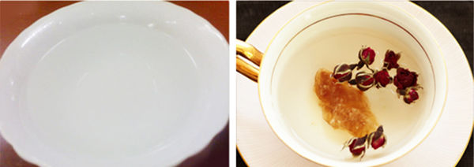

云南是我国甘蔗种植的主要省份之一，而云南大理得天独厚的地理环境造就了甘蔗的独特品质。云南特产大理红冰糖采用金沙江畔高糖、高产老品种甘蔗，沿用传统古法，甘蔗原汁小锅直接熬制，最大程度的保留了冰糖的营养价值，富含各种微量元素，具有很好的食疗和保健效果。

国家标准上，冰糖分为白冰糖和黄冰糖。并没有红冰糖的说法，那土法红冰糖又是什么呢? 冰糖的制作中：用纯度很高的白砂糖，工业化生产出来的冰糖多为白色;而黄冰糖，采用的是粗蔗糖制作，粗蔗糖里的有机营养物质使冰糖发黄。 而红冰糖就属于黄冰糖种类的，不同的是，红冰糖制作直接用甘蔗汁熬制的饱和糖液结晶而成，有机营养物质更高，颜色就更深，深的发红，并非大红色，就像红糖也并不是红色的一样。
大家都知道，冰糖养阴生津，润肺止咳，对肺燥咳嗽、干咳无痰、咯痰带血都有很好的辅助治疗作用。 普通单晶冰糖，经过脱蜜，离心甩干，通风干燥，过筛，分档。成品中营养成分就只剩下糖了。 而云南大理红冰糖，采用原始的加工方式，土法制作，直接用金沙江畔老品种甘蔗汁熬制，除去了各种工业加工方法，最大程度的保留了冰糖的营养价值，富含各种微量元素，得到的红冰糖养颜成分甚高，食疗和保健效果更好。
大理红冰糖老少皆宜，特别是肺燥咳嗽、千咳无痰、咯痰带血者宜适量食用红冰糖，对缓解症状有一定的帮助。每天20克左右，用红冰糖调配红茶、咖啡和食物的原有风味及口感。红冰糖带有清爽不腻的甜味，可用于煲制各种滋补食品。
云南大理红冰糖至今沿用传统古法，甘蔗原汁小锅直接熬制。小锅熬制使得甘蔗汁受热更均匀，水分蒸发充分，蔗糖内的营养成分保留更为充足。 红冰糖制作过程 大理古国，这里民风淳朴，也保留了很多传统老工艺制作的东西，红冰糖就是其中一种。而金沙江畔老品种甘蔗高糖、高产的特点，也是熬制红冰糖的必备条件。
*甘蔗收割
我们只用甘蔗原汁，全程0添加，对传统的坚持，亦是对“红冰糖”的负责。全程手工收割，倒不是没有机器，而是对传统的坚持。老一辈人总觉得机械化的东西，味道根本不对。
这里的甘蔗不打农药，因此在榨汁的时候不用清洗。甘蔗皮上面的有一层白霜，白霜越多则说明甘蔗越新鲜，糖份含量越高。每天几百斤的甘蔗，几天忙碌下来，就可以看到漫山遍野的甘蔗渣了。
*小火慢熬
其间最重要的就是火候了，因此老师傅的经验起到决定性作用。不是随便一个人，随便一个地方，拿点甘蔗就可以熬制出红冰糖。 熬制好的糖液，要放到另外一个锅里面，经过7-10天的漫长养晶体，最终才能成为我们所见到的红冰糖
普通老冰糖采用脱蜜，加白矾工艺，营养所剩无几，长期食用影响健康。 云南大理红冰糖外观鲜泽透亮，全程0添加，甘蔗汁直接熬制。当零食吃也是种不错的选择。
普通冰糖除了甜味，似乎还是少了些什么。 云南大理红冰糖纯甘蔗熬制的糖都不会很甜，有甘蔗的清香味。与花茶搭配起来，秀色可餐，营养成分更多。
红冰糖与花茶是最完美的结合，具有美容养颜的功效。另外，可以尝试做成冰糖银耳羹或冰糖雪梨都有清热润肺的功效。